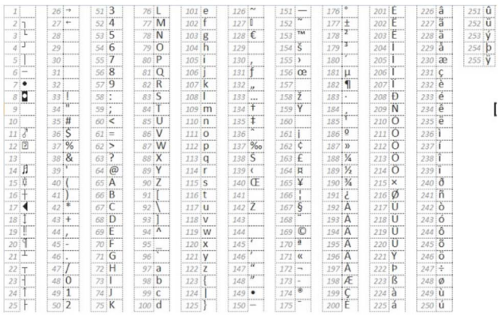

⭐⭐ Hacer un programa que ingrese una cadena de caracteres
y determine el número de mayúsculas y el número de minúsculas.
Se deberán eliminar los espacios en blanco antes de hacer el cálculo
y se puede considerar cualquier caracter que no sea a-z o A-Z
como mayúscula o minúscula.
En caso de generar una solución más compleja se puede consultar la siguiente tabla:

Con la función charCodeAt se puede limitar la verificación de caracteres de la a a la z en mayúscula o minúscula.